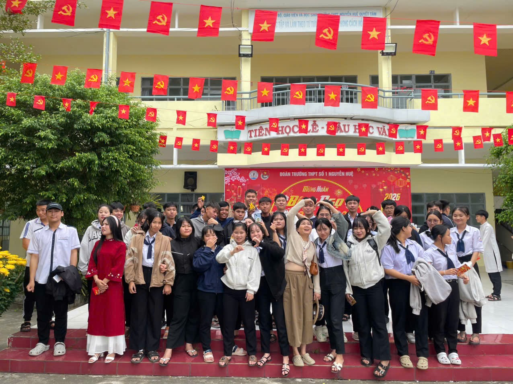
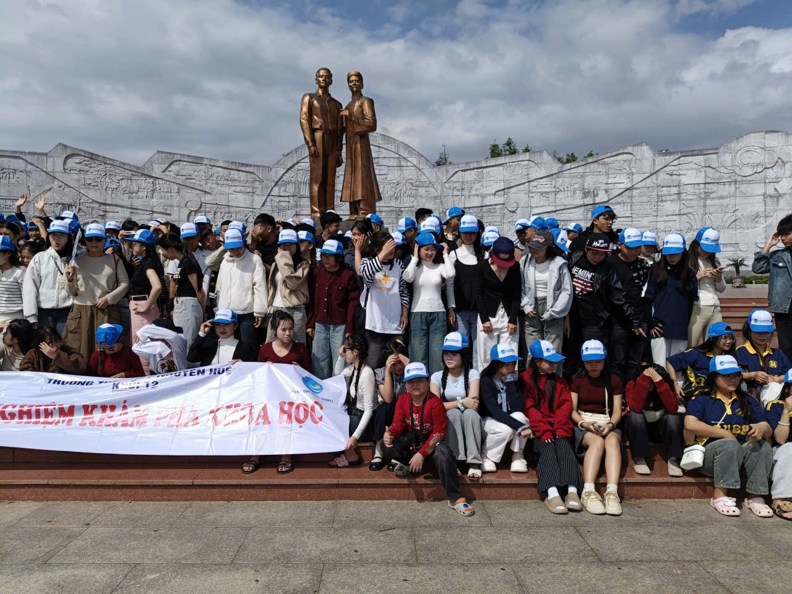

TRANG WEB CÁ NHÂN CỦA NGUYỄN LÊ BẢO Ý
Giới thiệu
Họ và Tên: Nguyễn Lê Bảo ý
lớp 12a5
Trường THPT Số 1 Nguyễn Huệ
Ảnh đại diện của tôi
Sở thích
nấu ăn
nghe nhạc
học bài
Điểm mạnh
Chăm chỉ trong học tập
Có tinh thần trách nhiệm
Yêu thích thể thao
Điểm yếu
Dễ mất tập trung khi học lâu
Kỹ năng giao tiếp còn hạn chế
Cần cải thiện kỹ năng quản lý thời gian
Ảnh lớp


Liên hệ
Email: nguyenlebaoy99.com@gmail.com
© 2025-2026 Nguyễn Lê Bảo Ý- Lớp 12A5 - Trường THPT Số 1 Nguyễn Huệ